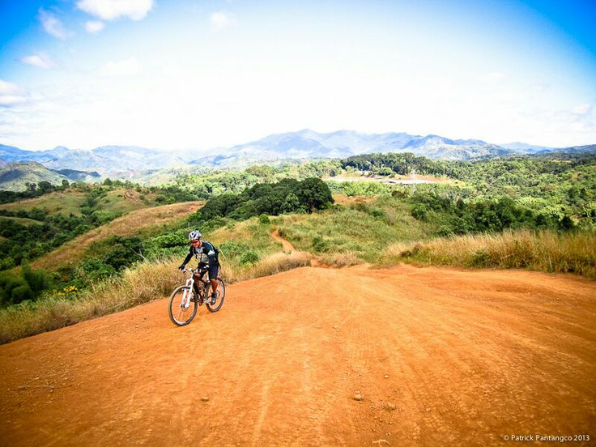
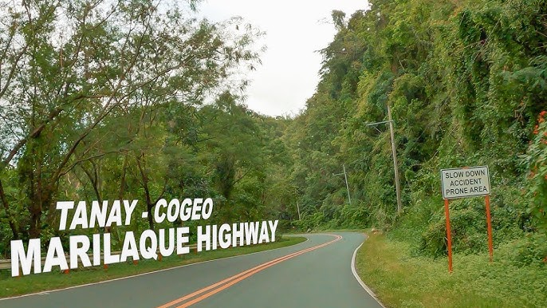
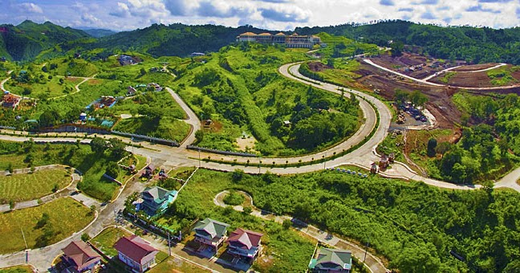
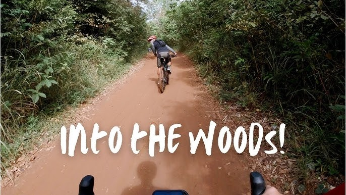
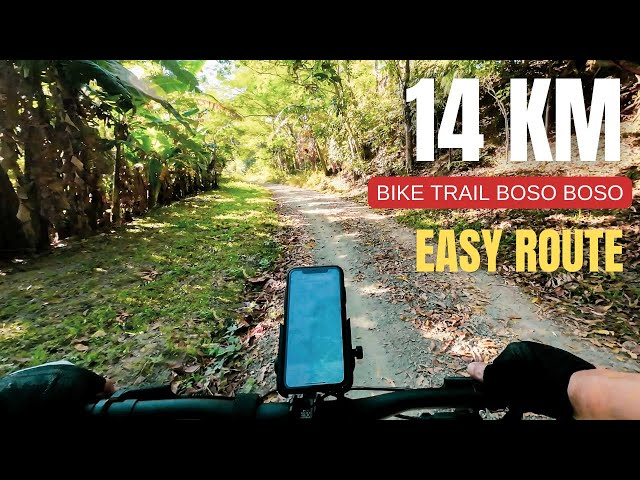
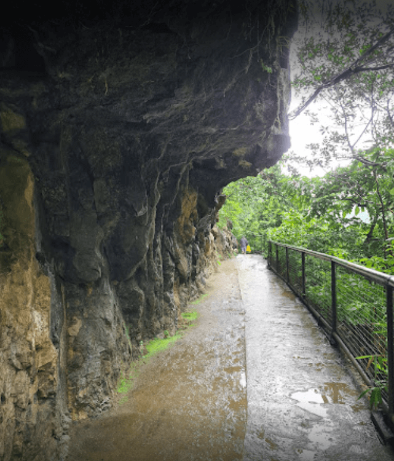

Maarat Trails
The "Mecca" of mountain biking in San Mateo, offering various downhill trails and technical jumps for pros.

Marilaque Highway
A long, scenic route popular with road bikers, known for its challenging climbs and rewarding overlooking stops.

Timberland Heights
Often called the "Wall" due to its intense, punishing paved ascent, making it a rite of passage for local cyclists.

Pestano Farm Trail
A fun, flowy dirt trail passing through local farms and rivers, perfect for cross-country mountain bikers.

Boso-Boso Trail
Ride through historic ruins and rugged terrain, offering a mix of steep climbs and fast downhill sections.

Wawa Dam Trail
A picturesque and beginner-friendly route that rewards cyclists with a stunning view of the gorge and the dam.